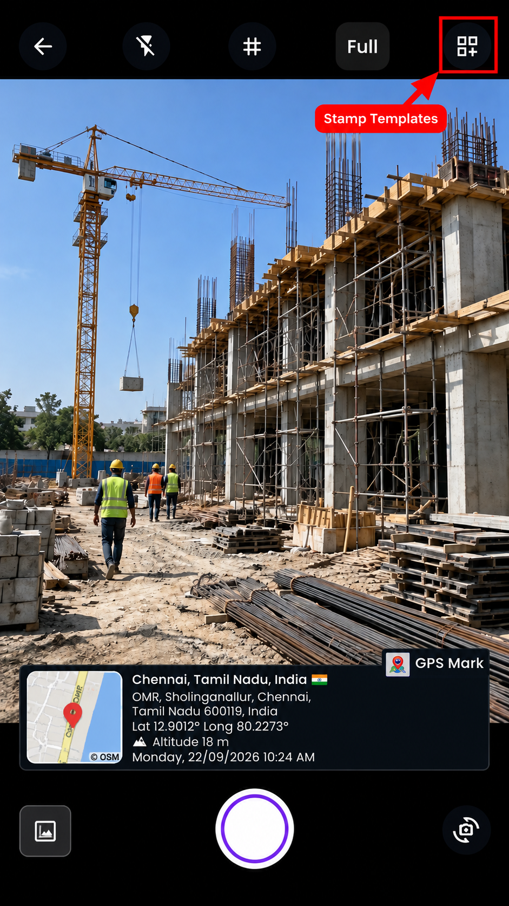
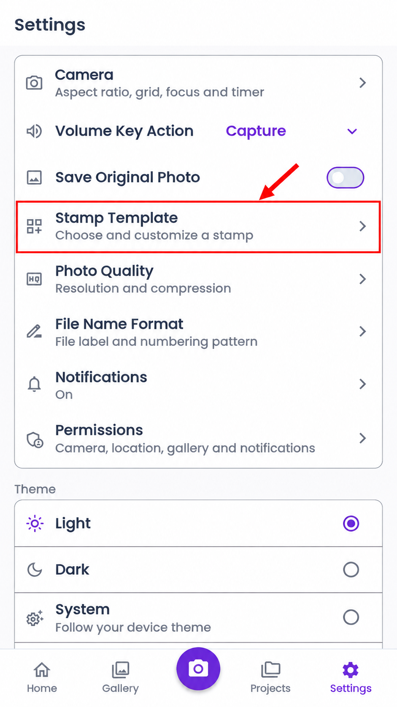
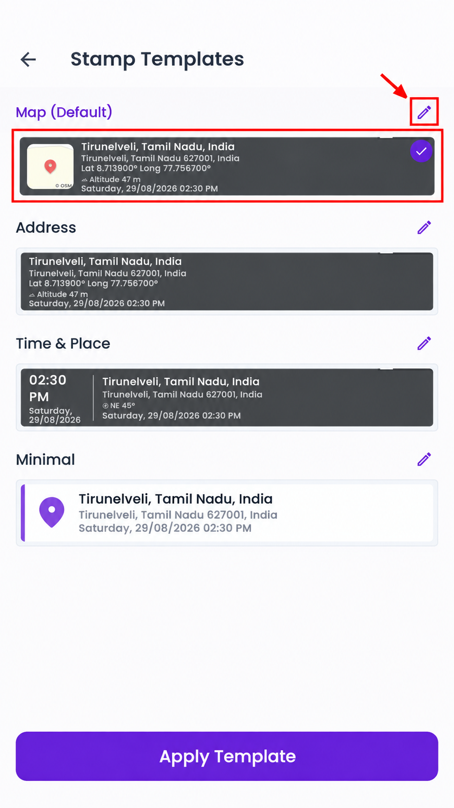
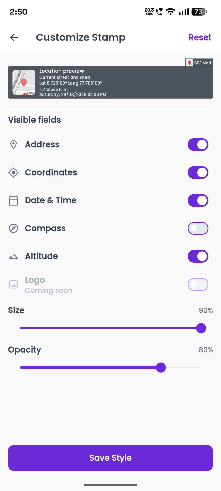
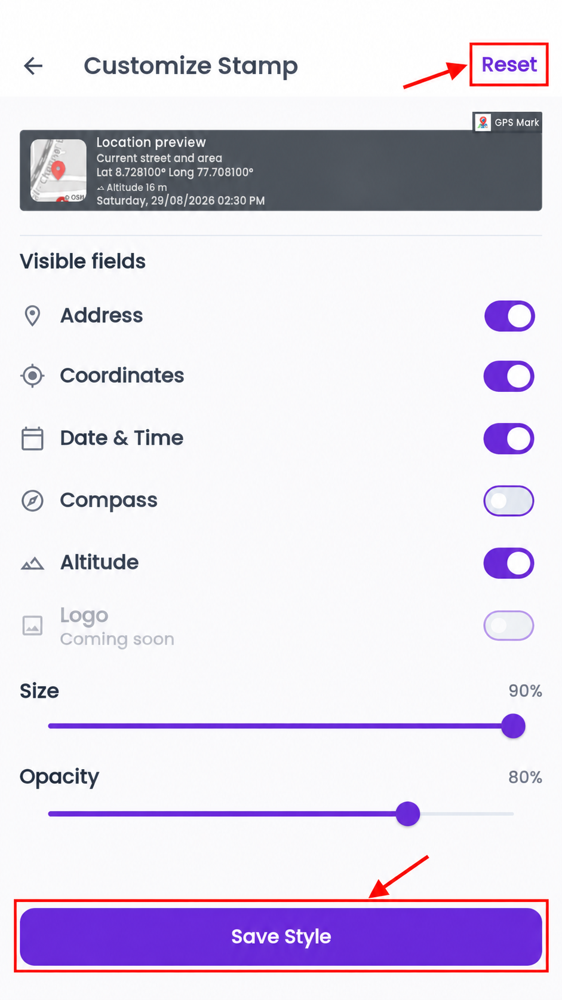

How do I select and edit a stamp template?
GPSMark provides five built-in stamp templates. Each template displays your captured location information in a different layout.
Stamp templates
Map
Displays a map preview together with location details. It is useful when you want the captured place to be clearly visible on the photograph.
Address
Focuses primarily on the location name and complete address without displaying the map by default.
QR
Displays location information with a QR code that can be scanned to access the encoded location details.
Time & Place
Highlights the capture time and date together with the location information. It is useful when time and place are the most important details.
Minimal
Displays essential location information in a simple, clean and compact design. This template uses a light-coloured stamp layout.
Step 1: Open Stamp Templates from the Camera
Open the Camera screen and tap the Templates icon in the camera toolbar.

Step 1.1: Open Stamp Templates from Settings
You can also open the Stamp Templates screen through Settings → Stamp Template.

Step 2: Select or edit a template
To select a template
- Tap the template preview you want to use.
- The selected template will be highlighted.
- Tap Apply Template to make it the active stamp.
- The selected template will be used on the Camera screen and your captured photographs.

To customize a template
- Find the template you want to modify.
- Tap the Edit icon next to its name.
- The Customize Stamp screen will open.
Customize the stamp
The preview updates instantly as you change the stamp settings.
You can choose which details appear on the stamp, including:
- Address
- GPS coordinates
- Date and time
- Compass direction
- Altitude
You can also change the stamp’s size and transparency using the available sliders.

Step 3: Save or reset the stamp style
Save Style: Tap this button to save your changes.
Reset: Tap this button to remove your changes and return to the original stamp design. After resetting, tap Save Style to save it.
